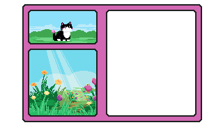

Leave the flower; such precious, fleeting things are best enjoyed in the moment. Ephemeral as they are, it would be rude to cut their life even shorter. You were welcomed into this place; what good would it do to disturb it? You watch the flower's petals dance under the sunlight for a few more minutes. Snapping yourself out of its trance, you decide to venture onward. The bees of the field sing their farewell as you, peaceful traveler, leave their domain. There are mountains in the distance, their high peaks reaching for the sky. You could return to the fork in the road and explore the other path. Or you could venture deeper into the forest.